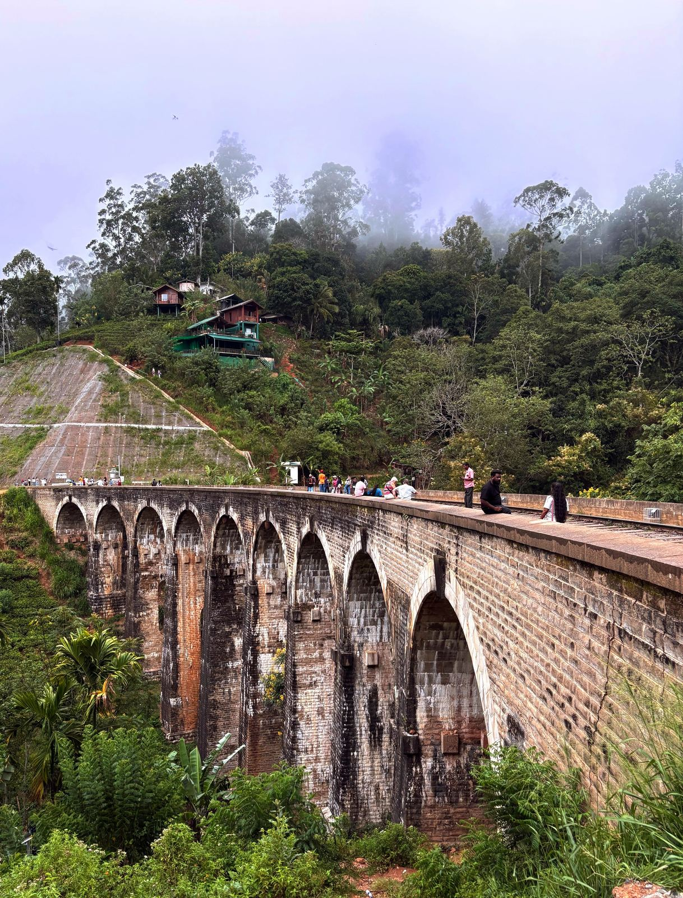

C1 — Adventure Tours
Soulful Sri Lanka:
“The Silent Footstep”
Authentic Heritage, Wild Horizons, and the Art of Slow Discovery
This journey is designed for travellers who want to experience the authentic diversity of Sri Lanka, moving seamlessly from the Cultural Triangle to the Deep South. It balances iconic landmarks with secluded wilderness, offering a comprehensive look at the country's history and natural beauty — perfect for those seeking a mix of spiritual sites, rugged nature, and coastal relaxation in one fluid movement.
Four Worlds, Fourteen Days
Habarana — Cultural Triangle
Ancient Heritage
The tour begins in the central plains, focusing on the historic sites of Dambulla and the legendary rock fortresses of Sigiriya and Pidurangala — monuments to a civilisation that astonishes 1,500 years on.
Gal Oya Valley
Wildlife & Nature
Travellers venture into Minneriya for world-class elephant sightings before heading to the remote landscapes of Gal Oya for boat safaris across the vast inland sea and intimate forest encounters.
Ella — Highlands
The Highlands
Experience the mist-covered tea country in all its grandeur, followed by the world-famous scenic train ride winding through deep valleys and emerald peaks into the mountain spirit of Ella.
Tangalle — Ahangama — Galle
Coastal Discovery
The trip concludes along the southern belt — the quiet golden bays of Tangalle, ancient rock temples hidden in the forest, and the living history of UNESCO-listed Galle Fort at sunset.
The full day-by-day itinerary — including stays, activities and pace — is shared exclusively upon enquiry.
Request the Full Itinerary